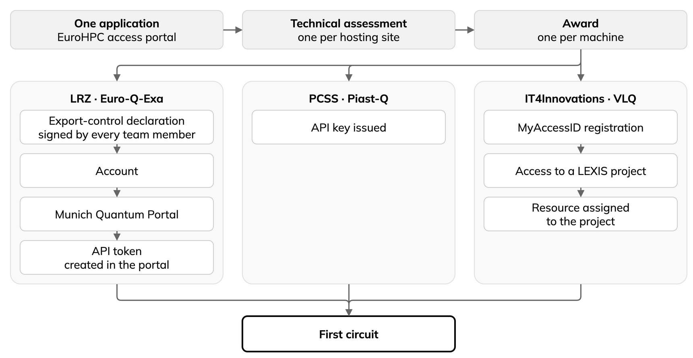
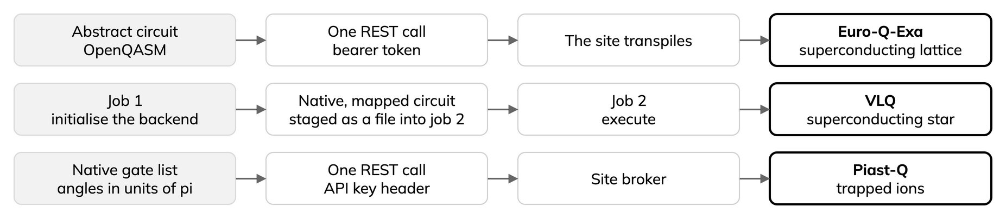

EuroHPC JU quantum devices and HPC-QC access in practice¶
The EuroHPC Joint Undertaking now offers quantum computers that you can apply to use and, if your application is granted, use free of charge. This lesson is a practical guide to getting onboarded and running your first jobs on three of them: Euro-Q-Exa at LRZ, Piast-Q at PCSS and VLQ at IT4Innovations.
Important
Always refer to the official documentation for the most up-to-date details. The official pages are gathered in one table, Official links, by task.
See also
Start with the overview. ENCCS’s 2025 white paper, Quantum Computing in the EuroHPC JU Ecosystem: A Practical Guide for European SMEs, surveys the EuroHPC quantum computers. This lesson is the hands-on follow-up for three of them.
Prerequisites
Basic familiarity with quantum circuits: qubits, gates, shots, and what a Bell pair is.
The command line, and enough Python to read a short script.
Getting access¶
Quantum access runs through the same EuroHPC access portal as classical HPC time, on monthly cut-offs rather than one annual deadline, so a missed date costs weeks. This holds at the time of writing.
Your proposal goes through a technical assessment: the hosting sites judge whether what you describe can run on their hardware. The form asks you to describe the problem and your needs, such as qubit counts, circuit depths, shot budgets and how you will handle noise, to name a few. If the assessment finds your workload feasible, you may be awarded time, though this can vary depending on other factors.
We recommend starting the proposal at least two weeks ahead, and contacting us, or your National Competence Centre (NCC), with questions in the meantime.
To apply, open: EuroHPC JU: User Portal
To read the call, open: EuroHPC JU: Call for proposals for Quantum Access Pilot Mode
To read the access policy, open: EuroHPC JU: Supercomputers Access Policy and FAQ
To read EuroHPC JU’s own page on quantum access, open: EuroHPC JU: Quantum Computing & Access
Onboarding¶
Once you are granted access, and at the time of writing, onboarding takes a separate process for each device you applied for. Yet as mentioned in the access page, there is one application and one portal. The diagram below shows the onboarding process so far for three of the devices.
Note
These steps may change going forward, as the hosting sites update their procedures. Check each site’s official documentation for the current process. Keep an eye on my-eurohpc.eu for updates on access methods, and follow ENCCS on LinkedIn for further updates.


One application, then an award and a separate onboarding for every machine.¶
Details per site/machine¶
LRZ, Euro-Q-Exa. A signed export-control declaration goes back to the site, after which you receive an account and can log into the Munich Quantum Portal. You then create an API token in the portal yourself.
Two things to watch at LRZ. First, the export-control declaration is signed and returned by every team member named on the proposal, not just the applicant, so each of them has to be prompted. Second, check your account’s expiry date against your allocation period.
To manage your LRZ account and password, open: LRZ: IDM-Portal 2
To log in, open: LRZ: Munich Quantum Portal
For the HPC-QC use case, open: LRZ: HPCQC System Access and HPCQC Job Submission via MQSS-Adapter
IT4Innovations, VLQ. You register with MyAccessID, then request access to a named project in the LEXIS platform, and the site assigns a resource to that project. Submission then goes through HEAppE, which is a job-submission middleware. Keep three identifiers apart: your LEXIS project short name, the resource name, and the project as the submission middleware knows it.
To follow the site’s access steps, open: IT4Innovations: VLQ, Access
To log in to LEXIS, open: LEXIS Platform: portal
To read how to log in to LEXIS, open: LEXIS Platform: LEXIS Platform Login
PCSS, Piast-Q. The simplest to onboard of the three: you are issued an API key and you use it. So far, no account, no portal and no forms are needed for direct submission. The hybrid route, which couples to classical resources at the same site, additionally needs an institution account and a VPN certificate.
The machines: differences and a few details¶
The three machines are genuinely different, in ways that change what a circuit even looks like. Please check the following table for details, and the white paper on Zenodo.
Euro-Q-Exa |
VLQ |
Piast-Q |
|
|---|---|---|---|
Technology |
Superconducting |
Superconducting |
Trapped ion |
Qubits available |
53 of 54 |
23 of 24, on the calibration set |
20 |
Connectivity |
Lattice, 170 coupled pairs |
Star, through one resonator |
All to all |
Native gates |
|
|
|
What you send |
An abstract circuit; the site maps it |
Native gates, mapped to physical qubits |
Native gates, mapped to physical qubits |
Authentication |
Bearer token from a portal |
Federated identity token |
API key header |
Time is billed in |
Equivalent qubit-seconds |
Device execution time |
Device time, including ion loading |
Access shape |
One REST call |
Two jobs |
One REST call |
The row that matters most is what you send. On Euro-Q-Exa you can send an abstract circuit and the site maps it for you. On the other two you must send native gates, already mapped to physical qubits. The same Bell pair is three different objects.
Note
The billing row is expanded in “QPU hours” on the devices. How the machines sit alongside classical HPC is in HPC and HPC-QC.
What you send, and where¶


What you send and where you send it, for each of the three machines.¶
Note
The star topology. On VLQ every two-qubit gate locus is (qubit, resonator); there is no qubit-to-qubit coupling at all. An entangling operation between two qubits is a MOVE of one qubit’s state into the resonator, a CZ between the resonator and the other qubit, and a MOVE back. Since that site does not transpile for you, the MOVEs have to be in the circuit you send, whether you write them or a compiler inserts them. Any depth estimate you carried over from a lattice machine will not hold.
For the design, see the IQM Star paper and IQM’s MOVE gate.
Official pages¶
HPC and HPC-QC¶
EuroHPC JU describes its quantum computers as “hosted in Europe and tightly coupled to EuroHPC supercomputers” (Quantum Computing & Access). Its list of quantum computers names a hosting supercomputer for each: SuperMUC-NG for Euro-Q-Exa, ALTAIR for Piast-Q and KAROLINA for VLQ.
Quantum access runs through the same EuroHPC access portal as classical HPC time, on monthly cut-offs. The application form asks for classical resources in node hours, while sites often discuss them in GPU hours. See “QPU hours” on the devices.
What each site describes¶
LRZ. EuroHPC JU’s list says the system is integrated into the LRZ supercomputer “via a unified hybrid software environment”. LRZ’s documentation describes a cluster of its BEAST testbed “used for hybrid HPCQC workflows”, with HPC compute nodes “tightly integrated with the Quantum Server”.
Quantum jobs are submitted from the HPC system through the MQSS-Adapter, in a Slurm job script that
requests the QPU (--gres=qpu:iqm_eqe1:1). The page notes that HPCQC “is supported by demand”, with
access requested from LRZ through its service desk.
The MQSS Interfaces documentation describes two access points: the Munich Quantum Portal, and “a high-performance computing (HPC) access point for users working on local or institutional HPC resources”.
To get HPCQC system access and submit HPCQC jobs, open: LRZ: HPCQC System Access and HPCQC Job Submission via MQSS-Adapter
IT4Innovations lists VLQ as “integrated into the EuroHPC supercomputer KAROLINA”. Its access documentation says the Python environment is installed on the machine you execute circuits from, which may be a compute node “of any HPC system (LUMI, Karolina, Vega, Meluxina, etc.), or your desktop, laptop or any other computer of your choice”. Submission then goes through HEAppE, which is a job-submission middleware rather than a quantum service.
For the site’s page on the machine, open: IT4Innovations: VLQ quantum computer
For the access documentation, open: IT4Innovations: VLQ, Access
PCSS states that the quantum computer “is integrated with a classical supercomputing system at PCSS to enhance hybrid quantum-classical computing approaches”. What the hybrid route needs is in Onboarding.
For the site’s page on the machine, open: PCSS: PIAST-Q
Reaching LRZ’s HPC-QC system¶
LRZ’s page describes BEAST as “an HPC testbed system at LRZ for researching and testing emerging technologies”, with a cluster called Wolpertinger “used for hybrid HPCQC workflows”. Access is on request, as noted above. The login node “is not public”, so you log in to a gateway first.
Configure SSH: this follows the SSH configuration LRZ documents, in
~/.ssh/config:Host qclogin HostName qclogin.srv.lrz.de User <username> ServerAliveInterval 90 Host beast-login HostName login.beast.lrz.de User <username> ProxyJump qclogin ServerAliveInterval 90Install your public key on both hosts:
ssh-copy-id qclogin, thenssh-copy-id beast-login.Log in with one command:
ssh beast-login.To inspect the partition and your jobs:
sinfo -p wolpyandsqueue -u $USER. Thewolpypartition listed both GPUs and QPUs as Slurm generic resources.
Further reading¶
Papers on HPC-QC integration from LRZ and its Munich Quantum Software Stack partners. The first and the last concern a 20-qubit system at LRZ.
Mansfield et al., “First Practical Experiences Integrating Quantum Computers with HPC Resources: A Case Study With a 20-qubit Superconducting Quantum Computer”, arXiv:2509.12949, 2025: reports the integration of a superconducting 20-qubit quantum computer into the HPC infrastructure at LRZ, and the lessons drawn.
Burgholzer et al., “The Munich Quantum Software Stack: Connecting End Users, Integrating Diverse Quantum Technologies, Accelerating HPC”, arXiv:2509.02674, 2025: describes the stack, including front-end adapters, an HPC-integrated scheduler, a compiler and the Quantum Device Management Interface (QDMI).
Burgholzer et al., “Practical HPCQC Integration with QDMI: A Real-Hardware Case Study with IQM Systems”, arXiv:2604.19869, 2026: a case study of HPCQC integration through QDMI on real hardware.
Farooqi et al., “Enabling Hybrid HPCQC Workflows with a Heterogeneous Software Stack”, arXiv:2608.14827, 2026: describes hybrid workflows in which Slurm exposes QPUs as generic resources and the MQSS compiles and dispatches the circuits.
A few details on Euro-Q-Exa¶
A REST API with a bearer token.
Circuits go as OpenQASM and the site transpiles.
A two-qubit entangling circuit at 100 shots returned:
{'11': 48, '00': 47, '01': 5}
You create the API token in the Munich Quantum Portal yourself.
Check your account’s expiry date against your allocation period.
Superconducting, on a lattice with 170 coupled pairs, and 53 of 54 qubits available.
The native gates are
randcz, but the site transpiles, so you can send an abstract circuit and the site maps it for you.Time is billed in equivalent qubit-seconds; see “QPU hours” on the devices.
For LRZ’s definition of the unit, open: LRZ: Definition of the computing unit for the LRZ Quantum Systems
Official pages¶
For the HPC-QC route, open: LRZ: HPCQC System Access and HPCQC Job Submission via MQSS-Adapter
For the acknowledgement wording, open: LRZ: Acknowledgement formulations
A few details on VLQ¶
Submission goes through HEAppE, and a circuit takes two jobs, because the service builds the backend object on its own side:
an initialisation job on a short queue, which produces the backend description, and
an execution job on a longer queue, which consumes that description and runs your circuit.
Your circuit is staged as an OpenQASM file into the job’s working directory between creating the job and submitting it.
To follow the site’s access steps, open: IT4Innovations: VLQ, Access
The circuit must already be native and mapped.
Read the architecture from the machine.
The device reports its own calibrated gate loci, and on the calibration set our job ran against, one qubit carried none at all: 23 usable qubits that day against the 24 in the specification.
Calibration moves, so read it at submission time.
For the calibration data, open: IT4Innovations: VLQ Calibration API
Authentication is a federated identity token.
The access token lasts six hours.
Official pages¶
For the site’s page on the machine, open: IT4Innovations: VLQ quantum computer
For the acknowledgement wording, open: IT4Innovations: Acknowledgments in publications
To read how to log in to LEXIS, open: LEXIS Platform: LEXIS Platform Login
A few details on Piast-Q¶
A broker API with an API key in a header.
You send the native gate list directly, and two conventions catch everyone: angles are in units of pi, and there must be exactly one measurement, at the end.
A 200-shot job takes between about 60 and 145 seconds, most of it ion cooling rather than gates.
Fixed overhead dominates to at least a couple of hundred gates, with a real depth cost beyond that, so in time terms job count is the scarce resource, the opposite of the intuition most people bring from superconducting hardware.
Plan depth against coherence, not against your time budget.
Two limits: 200 shots per job, and at most four concurrent connections to the machine.
Exceeding the connection limit returns an error while the job itself completes fine.
Piast-Q publishes quality windows, hours during which the machine is calibrated for user work.
Results outside them are provisional.
For the site’s page on the machine, open: PCSS: PIAST-Q
“QPU hours” on the devices¶
Euro-Q-Exa bills in equivalent qubit-seconds: wall-clock time on the device, scaled by qubit count and by one-qubit gate time. The formula is as follows:
\(t\): wall-clock time on the QPU.
\(n(S)\): number of qubits in system \(S\).
\(T_{1qg}(S)\): one-qubit gate time of \(S\); Q-Exa is the reference system.
For LRZ’s definition of the unit, open: LRZ: Definition of the computing unit for the LRZ Quantum Systems
VLQ bills device execution time, measured between execution start and end on the hardware itself. Classical overhead, staging and result handling fall outside the meter, so a slow client costs you nothing.
IT4Innovations publish the billing formula, the per-shot cost, a minimum charge of 0.9 seconds per job, worked examples, and an explicit statement that queue latency is not billed. Their own figures imply a useful rule: below roughly 2,250 shots you pay the floor anyway, so submit few large jobs rather than many small ones.
The formula is as follows:
\(N_\text{jobs}\), \(N_\text{shots}\): number of jobs, and shots per job.
\(c\): cost per shot, 400 µs as the worst case, or 350 µs plus the actual circuit time.
0.9 s: the minimum charge per job.
To estimate consumption on VLQ, open: IT4Innovations: Estimating Consumption on VLQ
Piast-Q bills device time, which the site defines as time on the machine including ion loading and re-initialisation, and excluding queue wait, network round-trips and time your client spends waiting.
Classical resources are in node hours, as we are all used to. Sites could discuss them in GPU hours.
Quick Reference¶
The three machines¶
Euro-Q-Exa |
Piast-Q |
VLQ |
|
|---|---|---|---|
Site |
LRZ, Germany |
PCSS, Poland |
IT4Innovations, Czechia |
Technology |
Superconducting |
Trapped ion |
Superconducting |
Qubits available |
53 of 54 |
20 |
23 of 24, on the calibration set we ran against |
Connectivity |
Lattice, 170 coupled pairs |
All to all |
Star, through one resonator |
Native gates |
|
|
|
Who transpiles |
The site |
You |
You |
Authentication |
Bearer token from a portal |
API key header |
Federated identity token |
Credential lifetime |
Token: no expiry shown in the portal |
Access token lasts six hours |
|
Time is billed in |
Equivalent qubit-seconds |
Device time, including ion loading |
Device execution time |
Access shape |
One REST call |
One REST call |
Two jobs |
Page |
Links, by task¶
A dash means this lesson lists no official page for that cell.
Task |
EuroHPC JU |
LRZ, Euro-Q-Exa |
PCSS, Piast-Q |
IT4Innovations, VLQ |
|---|---|---|---|---|
Apply |
• User Portal |
- |
- |
- |
Policy |
- |
- |
- |
|
Machines |
- |
• PIAST-Q |
||
Accounts |
- |
- |
||
Submit jobs |
- |
- |
- |
|
HPC-QC jobs |
- |
• HPCQC System Access and HPCQC Job Submission via MQSS-Adapter |
- |
- |
Time counted |
- |
• Definition of the computing unit for the LRZ Quantum Systems |
- |
|
Calibration |
- |
- |
- |
|
Acknowledge |
- |
- |
For the SSH steps to LRZ’s HPC-QC system, see Reaching LRZ’s HPC-QC system.
Acknowledgement¶
This work used EuroHPC Joint Undertaking quantum resources awarded under the Quantum Access call, hosted by LRZ, IT4Innovations and PCSS. We thank the support teams at all three sites.
Each site asks for its own wording, reproduced here as supplied:
We acknowledge EuroHPC JU for awarding project with ID 22/2026 access to the EuroHPC allocation on the Piast-Q trapped-ion quantum computer hosted by the Poznan Supercomputing and Networking Center
The authors gratefully acknowledge the use of the quantum system Euro-Q-Exa, co-funded by the EuroHPC JU, BMFTR (grant 13N16690), and the Bavarian State Ministry of Science and the Arts, operated by the Leibniz Supercomputing Centre (LRZ) in Garching, Germany, for providing the computational resources for this work.
This work was supported by the Ministry of Education, Youth and Sports of the Czech Republic through the e-INFRA CZ (ID:90254)
For LRZ’s wording, open: LRZ: Acknowledgement formulations
For IT4Innovations’ wording, open: IT4Innovations: Acknowledgments in publications
ENCCS is the EuroCC National Competence Centre Sweden, part of the EuroCC 3 project (grant 101306701), with partners Linköping University and RISE Research Institutes of Sweden.
See also¶
Licence
CC BY-SA for media and pedagogical material
Copyright © ENCCS contributors. This material is released by ENCCS under the Creative Commons Attribution-ShareAlike 4.0 International (CC BY-SA 4.0).
Canonical URL: https://creativecommons.org/licenses/by-sa/4.0/
You are free to
Share: copy and redistribute the material in any medium or format for any purpose, even commercially.
Adapt: remix, transform, and build upon the material for any purpose, even commercially.
The licensor cannot revoke these freedoms as long as you follow the license terms.
Under the following terms
Attribution: You must give appropriate credit , provide a link to the license, and indicate if changes were made . You may do so in any reasonable manner, but not in any way that suggests the licensor endorses you or your use.
ShareAlike: If you remix, transform, or build upon the material, you must distribute your contributions under the same license as the original.
No additional restrictions: You may not apply legal terms or technological measures that legally restrict others from doing anything the license permits.
Notices
You do not have to comply with the license for elements of the material in the public domain or where your use is permitted by an applicable exception or limitation .
No warranties are given. The license may not give you all of the permissions necessary for your intended use. For example, other rights such as publicity, privacy, or moral rights may limit how you use the material.
This deed highlights only some of the key features and terms of the actual license. It is not a license and has no legal value. You should carefully review all of the terms and conditions of the actual license before using the licensed material.
MIT for source code and code snippets
MIT License
Copyright (c) ENCCS contributors
Permission is hereby granted, free of charge, to any person obtaining a copy of this software and associated documentation files (the “Software”), to deal in the Software without restriction, including without limitation the rights to use, copy, modify, merge, publish, distribute, sublicense, and/or sell copies of the Software, and to permit persons to whom the Software is furnished to do so, subject to the following conditions:
The above copyright notice and this permission notice shall be included in all copies or substantial portions of the Software.
THE SOFTWARE IS PROVIDED “AS IS”, WITHOUT WARRANTY OF ANY KIND, EXPRESS OR IMPLIED, INCLUDING BUT NOT LIMITED TO THE WARRANTIES OF MERCHANTABILITY, FITNESS FOR A PARTICULAR PURPOSE AND NONINFRINGEMENT. IN NO EVENT SHALL THE AUTHORS OR COPYRIGHT HOLDERS BE LIABLE FOR ANY CLAIM, DAMAGES OR OTHER LIABILITY, WHETHER IN AN ACTION OF CONTRACT, TORT OR OTHERWISE, ARISING FROM, OUT OF OR IN CONNECTION WITH THE SOFTWARE OR THE USE OR OTHER DEALINGS IN THE SOFTWARE.